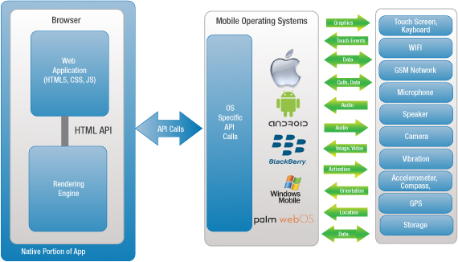

Silesian Java User Group - 15.04.2016
Ionic - case study
Created by Tomasz Waszczyk / @Boomattache
Agenda
- Introduction
- Challange
- Ionic 1
- Ionic 2
- Zmiana przedziału czasowego
- Zaktualizowany MQL
- Engulfing pattern w MQL
- Jakie IDE do MQL?
- Gdzie szukać pomocy technicznej
- Wersjonowanie naszych automatów
- . . .
Introduction
- About me
- Who am I ?
- Feel free to ask during presentation.
My story with Hybrid Applications
...has begun around 1.5 year ago.
Ionic 1
...2015 year was very fruitfull
Ionic 2
...2016 year is also very fruitfull
What is hybrid application ?
...it is almost rocket science..
Pros
- Cross Platform
- Native Calls
- Offline Mode
- Larger user support
- App store distribution
- Push Notifications
Cons
- Hard development
- Some native features may be absent
- High performance can be difficult to achieve
RWD vs Hybrid Application
- no offline mode
- no native API
- distribution might be more difficult
Architecture
WebView

Code sources
Background Transitions
Different background transitions are available via the backgroundTransition option. This one's called "zoom".
Reveal.configure({ backgroundTransition: 'zoom' })Background Transitions
You can override background transitions per-slide.
<section data-background-transition="zoom">Pretty Code
function linkify( selector ) {
if( supports3DTransforms ) {
var nodes = document.querySelectorAll( selector );
for( var i = 0, len = nodes.length; i < len; i++ ) {
var node = nodes[i];
if( !node.className ) {
node.className += ' roll';
}
}
}
}
Code syntax highlighting courtesy of highlight.js.
Summary
“ ...sory guys but I do not feel yours application....”
“..is cool but...”
Tabular Tables
| Item | Value | Quantity |
|---|---|---|
| Apples | $1 | 7 |
| Lemonade | $2 | 18 |
| Bread | $3 | 2 |
Clever Quotes
These guys come in two forms, inline:
“The nice thing about standards is that there are so many to choose from”
and block:
Intergalactic Interconnections
You can link between slides internally, like this.
Speaker View
There's a speaker view. It includes a timer, preview of the upcoming slide as well as your speaker notes.
Press the S key to try it out.
Export to PDF
Presentations can be exported to PDF, here's an example:
Global State
Set data-state="something" on a slide and "something"
will be added as a class to the document element when the slide is open. This lets you
apply broader style changes, like switching the page background.
State Events
Additionally custom events can be triggered on a per slide basis by binding to the data-state name.
Reveal.addEventListener( 'customevent', function() {
console.log( '"customevent" has fired' );
} );
Take a Moment
Press B or . on your keyboard to pause the presentation. This is helpful when you're on stage and want to take distracting slides off the screen.
Possible solutionsM
- Right-to-left support
- Extensive JavaScript API
- Auto-progression
- Parallax backgrounds
- Custom keyboard bindings
Before end of my presentation

THE END
Thank you !
Feedback highly appreciated !
Contact: tomasz monkey waszczyk dot com